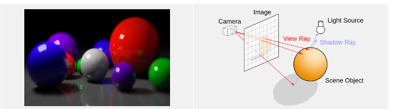
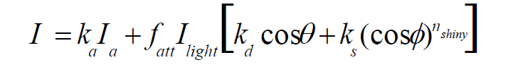
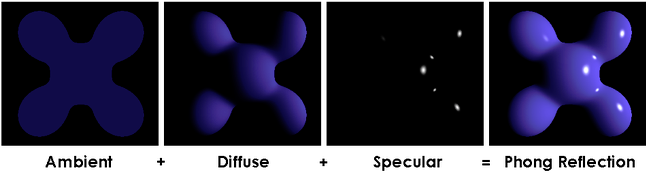

Illumination
Requirement
Here comes the new project.This project may be a little difficult.You have 2 choices:
1:Based on last project:Let's your sitck man move
2:Create your own scene,you can place anything in it
Choose one and use at least two different method such as Phong model, Gouraud model to complete this project.
Experiment Procedure
The phong illumination divide light into 3 kinds, they are ambient, diffuse and specular.
- ambient: light source represents an omni-directional, fixed-intensity and fixed-color light source that affects all objects in the scene equally.
- diffuse: the reflection of light from a surface such that an incident ray is reflected at many angles rather than at just one angle as in the case of specular reflection.
- specular: each incident ray is reflected, with the reflected ray having the same angle to the surface normal as the incident ray.
The formula and illustration are below.
 In this experiment, I compelte the flat shading and phong shading. The main parts are vertex and fage files. The former calculate the vertex light, and the latter calculate the fragment light
In flat shading, we can get the normal vector of fragment form three normal vector of vertexs, and regard this normal vector as the normal vector of every pixel of this fragment. It means a fragment has only one color. If the object is divided into a little fragments, it will looks bad. We can see every piece of the object. And there is no transition between fragment and fragment, the difference between color of fragments is great.
In phong shading, we calculate normal vector of every pixel with interpolation, and calculate the color of every piexl respectively. It will make the object looks very smooth.
Demo
This video shows the following illustration:
- flat shading
- flat shading(only ambient)
- flat shading(only diffuse)
- flat shading(only specular)
- phong shading
- phong shading(only ambient)
- phong shading(only diffuse)
- phong shading(only specular)